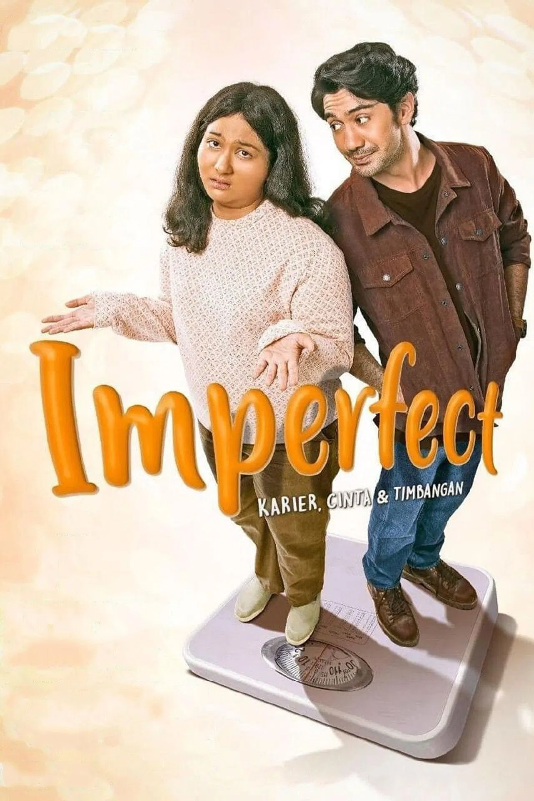

Yowis Ben
-
Deskripsi Singkat: Komedi masa remaja berbahasa Jawa Timuran tentang perjuangan membentuk grup band sekolah.
-
Aktor Pemeran Utama: Bayu Skak, Cut Meyriska, Brandon Salim, Joshua Suherman, Tutus Thomson
-
Pengarang Cerita: Bayu Skak & Bagus Bramanti
Sutradara: Fajar Nugros & Bayu Skak
-
Rating:
-
Sinopsis: Bayu, seorang anak SMA biasa yang sering merasa terpinggirkan, jatuh cinta pada Susan, gadis paling populer di sekolahnya. Merasa tidak punya nilai lebih untuk bersaing dengan pacar Susan yang tampan dan kaya, Bayu memiliki ide gila: membentuk band rock komedi bersama teman-temannya (Doni, Yayan, dan Nando) bernama Yowis Ben. Di tengah keterbatasan dan konflik internal, mereka berjuang agar band ini populer demi meraih hati Susan.